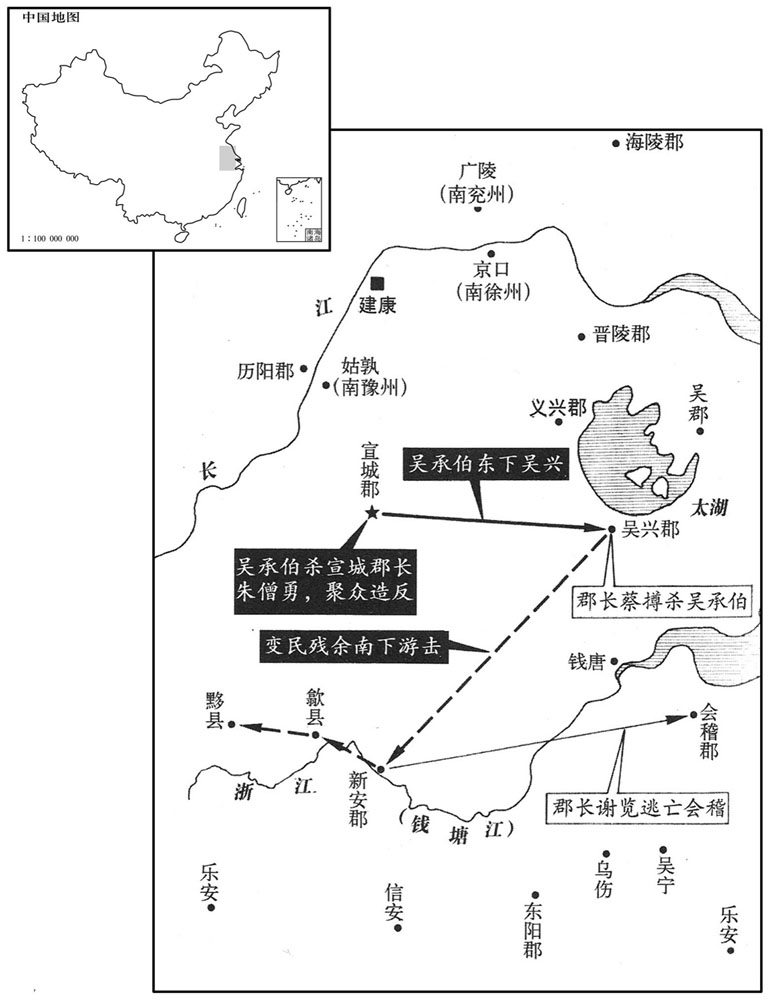

公元510年资治通鉴：本年记事、原文与白话对照
按原书编年位置阅读；追叙和史论不等于本年发生的事件。白话采用所据译本，缺译不以生成译文补齐。
卷147 · 本年记事
公元510年 · 梁高祖武皇帝天监九年
九年〔（庚寅、五一○）〕
本年事件索引（现代整理）

本年形势与背景参考图
春，正月，乙亥，以尚书令沈约为左光禄大夫，右光禄大夫王莹为尚书令。约文学高一时，而贪冒荣利，用事十余年，政之得失，唯唯而已。〔冒，莫北翻；下同。唯，于癸翻。〕自以久居端揆，有志台司，论者亦以为宜，而上终不用；及求外出，又不许。徐勉为之请三司之仪，〔梁官制有开府同三司之仪，在开府仪同三司下。为，于伪翻。〕上不许。
春季，正月，乙亥（初二），梁朝任命尚书令沈约为左当禄大夫，右光禄大夫王莹为尚书令。沈约的文章名高一时，然而贪求荣华之利，掌权十多年，对政治方面的得失，唯唯喏喏，只会顺从。他自以为久为尚书省长官，因此有意于三公之位，人们的议论也认为他合适，但是梁武帝终究没任用他；他请求到外地去做官，也不准许。徐勉为他请求开府同三司之仪的官衔，武帝也不同意。
庚寅，新作缘淮塘，北岸起石头迄东冶，南岸起后渚篱门迄三桥。
庚寅（十七日），梁朝新筑缘淮塘，北岸从石头起到东冶，南岸从后渚篱门起到三桥。
三月，丙戌，魏皇子诩生。〔【章：十二行本「生」下有「大赦」二字；乙十一行本同；孔本同；张校同。】〕诩母胡充华，临泾人，〔充华，晋武帝制。宋明帝时以婕妤、充华等五职位亚九嫔，萧齐之世，位列九嫔。临泾县，自汉以来属安定郡。诩，况羽翻。〕父国珍袭武始伯。〔隋志，金城郡狄道县，后魏置武始郡。〕充华初选入掖庭，同列以故事祝之，〔【章：十二行本「之」下有「曰」字；乙十一行本同；孔本同。】〕「愿生诸王、公主，勿生太子。」充华曰：「妾之志异于诸人，柰何畏一身之死而使国家无嗣乎！」及有娠，同列劝去之，〔娠，音身。去，羌吕翻。〕充华不可，私自誓曰：「若幸而生男，次第当长，〔长，丁丈翻，今知两翻；下渐长同。〕男生身死，所不憾也。」既而生诩。
三月丙戌（十四日），北魏皇子元诩出生。元诩的母亲胡充华是临泾人，胡充华的父亲胡国珍袭位武始伯。胡充华初被选入后宫之时，和她身份一样的嫔妃们照惯例替她祝告说：“愿生诸王、公主，不要生太子。”胡充华却说：“我的志向与你们不同，岂能害怕一身之死而让国家没有继承人呢？”到她怀孕之后，嫔妃们劝她把胎儿打掉，她却不干，并私下里发誓说：“如果有幸生下男孩，排行应该是长子，儿子生下来后我死去，没有丝毫遗憾之处。”很快就生下了元诩。
先是，魏主频丧皇子，〔先，悉荐翻。丧，直浪翻。〕年渐长，深加慎护，择良家宜子者以为乳保，〔乳母、保母也。〕养于别宫，皇后、充华皆不得近。〔近，其靳翻。〕
早先，北魏宣武帝屡丧皇子，他年纪渐渐大了，所以对元诩特别重视，谨慎护理，选择良家妇女中奶水好的做乳母，在别宫中哺养元诩，皇后和胡充华都不得接近。
己丑，上幸国子学，亲临讲肄。乙未，诏皇太子以下及王侯之子年可从师者皆入学。
己丑（十七日），梁武帝临幸国子学，亲自进入讲堂察视。乙未（二十三日），武帝诏令皇太子以下以及王侯之子年龄可以从师学习的都入学。
旧制：尚书五都令史皆用寒流。夏，四月，丁巳，诏曰：「尚书五都，职参政要，非但总领众局，亦乃方轨二丞；〔方轨，谓并驾也。二丞，谓左右丞。〕可革用士流，秉此群目。」于是以都令史视奉朝请，〔朝，直遥翻。〕用太学博士刘纳兼殿中都，司空法曹参军刘显兼吏部都，太学博士孔虔孙兼金部都，司空法曹参军萧轨兼左右户都，宣毅黑曹参军王颙兼中兵都，〔宣毅将军府之墨曹参军。颙，鱼容翻。〕并以才地兼美，首膺其选。
旧制规定：尚书五都令史全都选用寒门出身者担任。夏季，四月，丁巳（十六日），武帝诏令：“尚书五都，是参与朝政的重要职位，不但总领全局，而且与左右丞相并驾；可以择用士族门第出身的来担任，以操持全盘。”于是以都令史的地位等同于奉朝请，任命太学博士刘纳兼殿中都，司空法曹参军刘显兼吏部都，太学博士孔虔孙兼金部都，司空法曹参军萧轨兼左右户都，宣毅将军府墨曹参军王兼中兵都，上述几人都因才能和门第俱属上流而首先被选中。
六月，宣城郡吏吴承伯挟妖术聚众，〔妖，于骄翻。〕癸丑，攻郡杀太守朱僧勇，转屠旁县。闰月，己丑，承伯踰山，奄至吴兴。东土人素不习兵，吏民恇扰奔散，或劝太守蔡撙避之，撙不可，〔恇，去王翻。撙，慈损翻。〕募勇敢闭门拒守。承伯尽锐攻之，撙帅众出战，大破之，临陈，斩承伯。〔帅，读曰率。陈，读曰阵。〕撙，兴宗之子也。〔蔡兴宗仕宋大明、泰始之间，以方正自将。〕承伯余党入新安，攻陷黟、歙诸县，〔黟，音伊。歙，书涉翻。〕太守谢览遣兵拒之，不胜，逃奔会稽，台军讨贼，平之。览，瀹之子也。〔谢瀹仕宋、齐之间，位要近，有清望。会，工外翻。〕
六月，宣城郡的吏员吴承伯以妖术召聚众人，癸丑（十三日），攻进郡城杀了太守朱僧勇，转而又去旁边的县去屠杀人口。闫月己丑（十九日），吴承伯超过山岭，突然来到吴兴。东边的人向来不操兵演武，所以官吏和老百姓们都担惊受怕，四处奔散，有人劝太守蔡撙躲避一下，蔡撙不愿意，他招募勇敢者关闭城门坚决拒守。吴承伯竭尽全力攻城，蔡撙率众出战，大败敌手，亲自出阵，斩了吴承伯。蔡撙是蔡兴宗的儿子。吴承伯的残部进入新安，攻陷了黟、歙等县，太守谢览派兵抵抗，没有取胜，逃跑到会稽，朝廷军队前来讨伐贼寇，平定了他们。谢览是谢瀹的儿子。
冬，十月，魏中山献武王英卒。
冬季，十月，北魏中山献武王元英去世。
上即位之三年，诏定新历，员外散骑侍郎祖暅奏其父冲之考古法为正，历不可改。〔散，悉亶翻。骑，奇寄翻。暅，古邓翻，又况晚翻。〕至八年，诏太史课新旧二历，新历密，旧历疏，是岁，始行冲之大明历。〔旧历，何承天历也。新历，祖冲之历也。冲之上历见一百二十九卷宋孝武帝大明六年。〕
梁武帝即位三年时，诏定新的历法，员外散骑侍郎祖上奏称他的父亲祖冲之考定古法正确，历法不可以改。到了八年之时，武帝又诏令太史核定新旧两种历法，新历法密，旧历法疏，这一年，开始实行祖冲之的《大明历》。
魏刘芳奏「所造乐器及教文、武二舞登歌鼓吹曲等已成，〔吹，昌瑞翻。〕乞如前敕集公卿群儒议定，与旧乐参呈。若臣等所造形制合古击拊会节，请于来年元会用之。」诏：「舞可用新，余且仍旧。」
北魏刘芳上奏：“所制造的乐器以及教的文武二舞、登歌、鼓吹曲等已经完成，请求如以前圣旨所命令的那样召集公卿群儒们议定，与旧乐一起上呈。如果我们几人所制造的乐器，形式制度符合古式，敲奏起来合节奏的话，请于来年元旦朝会之时使用。”宣武帝诏令：“舞蹈可以采用新的，其余的暂且仍用旧的。”